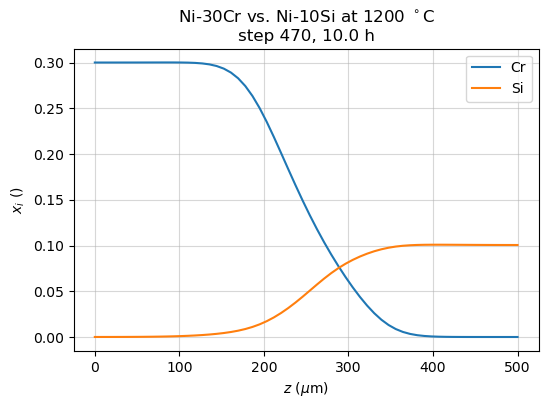
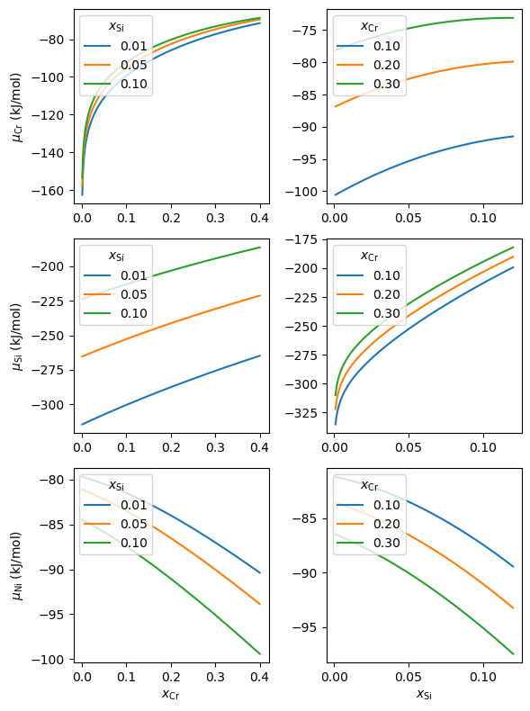
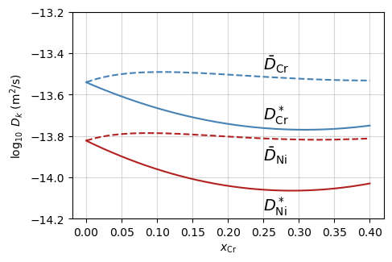

Basic use
Setting up a simulation
Configuration files use the TOML format and typically contain the following:
[databases]
thermo = "Schuster2000"
mobility = "Du2001"
[system]
components = "Ni, Cr, Si"
phases = "fcc"
[temperature]
TC = 1200 # temperature (Celsius)
[time]
th = 10 # simulation time (h)
num_out = 11 # number of saved time steps, optional
[space]
zmin = 0 # position of left-hand domain border (m), optional
zmax = 5e-4 # position of right-hand domain border (m)
nz = 60 # number of space steps, optional
grid_type = "linear" # grid type, optional
[initial_conditions]
[initial_conditions.atom_fraction]
shape = "step" # profile shape
step_fraction = 0.5 # step position (fraction of domain size), optional
left = {"Cr" = 0.3, "Si" = 0}
right = {"Cr" = 0, "Si" = 0.1}
[boundary_conditions]
[boundary_conditions.left]
flux.Cr = 0
flux.Si = 0
flux.Ni = 0
[boundary_conditions.right]
flux.Cr = 0
flux.Si = 0
flux.Ni = 0
The text located after the comment character # is ignored. Parameters are
entered with a key = value syntax ; string values need quotes, while
numerical values do not. The format uses nested tables, according to these
equivalent syntaxes:
[table]
[table.subtable]
parameter1 = "something"
parameter2 = "something else"
or:
[table]
subtable.parameter1 = "something"
subtable.parameter2 = "something else"
or:
[table]
subtable = {parameter1 = "something", parameter2 = "something else"}
When the configuration file is read, its content is converted to a Python dictionary using the native tomllib library. Nested tables then become nested dictionaries. The configuration file given above is equivalent to the following dictionary:
config = {'databases': {'thermo': 'Schuster2000',
'mobility': 'Du2001'
},
'system': {'components': 'Ni, Cr, Si', 'phases': 'fcc'},
'temperature': {'TC': 1200},
'time': {'th': 10, 'num_out': 11},
'space': {'zmin': 0, 'zmax': 5e-4, 'nz': 60, 'grid_type': 'linear'},
'initial_conditions':
{'atom_fraction':
{'shape': 'step',
'step_fraction': 0.5,
'left': {'Cr': 0.3, 'Si': 0},
'right': {'Cr': 0, 'Si': 0.1}
}
},
'boundary_conditions':
{'left': {'flux': {'Cr': 0, 'Si': 0, 'Ni': 0}},
'right': {'flux': {'Cr': 0, 'Si': 0, 'Ni': 0}}
}
}
Element symbols are case-insensitive — for instance, fe is a valid symbol
for iron. Some of the parameters are optional. When an optional parameter is
not present in the input file, a default value is assigned. “Factory” default
values are defined in the package installation but can be overridden by
user-defined values (see Default parameters).
The configuration contains the following tables and subtables:
Databases [databases]
thermo: name of the thermodynamic database, or path pointing to the database file.mobility: name of the mobility database, or path pointing to the database file.molar_volume: partial molar volumes database name or database, optional (factory default :standard, which has the same value for all atom species, see User data).vacancy_database: vacancy formation energy database name or database, optional (factory default:standard, which has the same values for all atom species, see User data).
The factory default values can be overridden by user-specified default values (see Default parameters).
If providing a database name, it must be listed in user_data.toml
(see User data). Alternatively, users can directly provide database
files or databases here : this is illustrated in Constant surface concentration (planar geometry).
System [system]
components: name of the atomic species, with the following syntax:
element1, element2, .... The first element of the list is considered the dependent component : its atom fraction should not be included in initial and boundary conditions.phases: name of the phases. The present version is limited to one phase.
Temperature [temperature]
TC: temperature in Celsius.
Use TK instead to enter the temperature in Kelvin.
Time [time]
th: simulation time in hour.
Use ts instead to enter the time in second.
num_out: number of saved time steps, optional (factory default: 2). A simulation often requires a large number of time steps; only the number of steps specified bynum_outare saved to file, and accessible after the simulation is done.
Note
The initial and last step are always saved, and these two steps are included
in num_out. Therefore num_out must be greater than or equal to 2. For
instance, if the simulation time is 2 h and one wants to access the results
that correspond to 1 h of simulation, one may use
num_out = 3. This will save results at 0, 1 and 2 h of simulation
(saved_th = [0, 1, 2]).
Space [space]
zmin: position of left-hand domain boundary in meter, optional (factory default: 0).zmax: position of right-hand domain boundary in meter.nz: number of space steps, optional (factory default: 60).q: common ratio for geometric grids, optional (factory default: 1.02).grid_type: grid point distribution, optional (factory default: ‘linear’). Possible values:‘linear’: linear grid from
zmintozmaxwith sizenz.‘geometric’: geometric grid from
zmintozmaxwith sizenzand common ratioq:
\(\Delta z_{i+1} = q \Delta z_{i}\).
file: read grid positions from file in the current job folder. The file can be in any format readable by the Numpygenfromtxtmethod.zmin,zmaxandnzare inferred from the grid file, and must not be included in the [space] table.geometry: domain geometry, optional (factory default: ‘planar’). Noda solves the diffusion problem in 1D, in the sense that it handles only one space coordinate. However, this coordinate can describe distances in different 3D geometries:planar: an infinitely wide plate of given thickness (Cartesian coordinate).cylindrical: an infinitely long cylinder of given radius (cylindrical coordinate).spherical: a sphere of given radius (spherical coordinate).
Note
Grid positions correspond to the edges of the volumes (nodes, noted z).
Fluxes are evaluated on nodes. Composition and related variables
(concentrations, atom fractions, chemical potentials, molar volumes, …)
are evaluated in the center of the volumes, noted zm. For instance, with
grid_type = linear, nz = 4 and zmax = 3 will produce
z = [0, 1, 2, 3] and
zm = [0.5, 1.5, 2.5] (see Background
section on Diffusion).
Note
At the moment, Noda only includes an explicit (forward Euler) time integration scheme, which is conditionally stable. The minimum time step is based on the smallest space step (see Time step). Using a geometric grid with a large common ratio will produce locally small space steps and therefore require a large number of time steps.
Note
In the cylinder and spherical geometries:
The space coordinate is named \(z\), instead of the usual \(\rho\) or \(r\), to favor compatibility across the three geometries.
The simulation domain is represented by a radial coordinate, and the left-hand domain border is closest to the centre of symmetry. Therefore the following is enforced: \(0 \leq z_\mathrm{min} < z_\mathrm{max}\).
If
zmin = 0, the left-hand domain boundary is at the axis (or center) of symmetry. In this case, it is recommended to use a 0-flux boundary condition at this boundary.It is possible to represent a hollow cylinder (or sphere) by giving a strictly positive value to
zmin.
Initial conditions [initial_conditions]
The initial system composition is specified using an atom_fraction table,
which contains the following:
shape: shape of initial profile. Possible values:step: heaviside profile. The step position can be specified with eitherstep_positionorstep_fraction. The atom fractions on the left and right sides of the step are read from theleftandrighttables (both required).smooth stepsame with an error function instead of heaviside.flat: flat profile. The atom fractions are read from theleftparameter (required).
step_position: absolute step position in meter.step_fraction: relative step position (between 0 and 1).left: name and atom fractions of each independent constituent on the left-hand side, with the following syntax:element1: value, element2: value, ....right: same on the right-hand side.file: read values from file in the current job folder. The file can be in any format readable by the Numpygenfromtxtmethod. It must have the independent component profiles arranged by columns, with the component names on the first line. The size of the columns must match that ofzm(i.e.,nz - 1). The other parameters (shape,step_position, …) must not be included in the initial_conditions table.
Boundary conditions [boundary_conditions]
Noda supports Neumann (fixed flux) and Dirichlet (fixed composition) boundary conditions. For each of the left and right boundary, the user can specify a composition (atom fractions of the independent components) or fluxes (of all components). If no condition is given, a zero flux condition is applied.
left: left boundary condition, optional (defaults to 0-flux). Possible values :atom_fraction: atom fraction of the independent components.flux: flux of all components in mol/m2/s.
right: same on the right-hand side.
The conditions are specified using tables with the following syntax :
element1: value, element2: value, .... Values can be numbers or expressions
of time (noted t) with basic Python operators, which will be evaluated with
eval, ex: (3*t + 2)**(1/2).
Note
Internally, Dirichlet boundary conditions are implemented by setting fluxes of the independent components in the lattice reference frame. A flux of the dependent component is set so that the sum of the volumetric fluxes at the boundary is 0:
where the \(V_i\) are the partial molar volumes. The volume of the simulation domain is conserved. The quantity of atom matter (in mol) may change due to differences in the partial molar volumes.
Options [options]
See Advanced use.
Running a diffusion simulation
A new simulation is created using the simu.NewSimulation class,
from a configuration file or dictionary:
from noda.simu import NewSimulation
simu1 = NewSimulation(file='couple_NiCrSi.toml')
simu2 = NewSimulation(config=config)
The configuration file can be specified using a string or a pathlib.Path
instance, and it can be relative to the script being run or absolute. The file
location defines the work directory, where the log file will be saved. By default,
the log file uses the same name as the configuration file, with the .nod
extension. A different name can be specified with the ref keyword argument.
Part of the log is printed to screen and saved to the log file (here
couple_NiCrSi.nod): file paths, default choices for parameters not present
in the configuration file. The log file also includes the configuration
dictionary and the simulation results. Logging can be turned off entirely by
passing the optional argument log=False.
When a simulation is created using a configuration dictionary, the work directory
is that of the script being run, and by default the log file name is a timedate
stamp — again this can be changed with the ref keyword argument.
The simulation is then run with the simu.NewSimulation.run() method:
simu1.run()
This method has two optional arguments:
show_completion: whether to print the completion rate to screen while the simulation is running. Boolean ; the default is False.verbose: Verbosity level, sets amount of information printed while the simulation is running. Valid values: 0 (less verbose) and 1 (more verbose). The default is 1.
Once the calculation is done, Noda logs the run time (screen and log file) and the results (to the log file only).
Accessing and plotting simulation results
Simulation results may be accessed either directly after a new simulation is
run, or by loading the log file from a simulation run in a previous
session. In the latter case, the simulation is created using the
simu.ReadSimulation class:
from noda.simu import ReadSimulation
simu1 = ReadSimulation('couple_NiCrSi.nod')
The file name can be relative or absolute.
Simulation parameters
The simulation results are stored at a number of time steps. The steps and the
associated simulation times (in h) can be accessed using the time.saved_steps
and time.saved_th attributes of the simulation object:
>>> simu1.time.saved_steps
array([ 0, 75, 150, 226, 301, 376, 451, 526, 602, 677, 752])
>>> simu1.time.saved_th
array([ 0., 1., 2., 3., 4., 5., 6., 7., 8., 9., 10.])
Note
The unit of saved_th is hour. Here, there are 11 saved steps
including the initial step (\(t=0\)), and the simulated time is 10 h.
However, the time step is not exactly a rational number multiplied by 3600.
It follows that the saved times are not necessarily integer numbers of hours.
Other useful time-related attributes are:
>>> simu1.time.th # time (h)
10
>>> simu1.time.ts # time (s)
36000
>>> simu1.time.dt # time step (s)
47.87234042553192
>>> simu1.time.nt # number of time steps
753
>>> simu1.time.num_out # number of saved time steps
11
The system parameters and simulation conditions are stored in attributes of the
simu.ReadSimulation instance that bear the names of the configuration
tables. For instance:
>>> simu1.databases # names of the databases in use
{'thermo': 'Schuster2000',
'mobility': 'Du2001',
'vacancy_formation_energy': 'standard',
'molar_volume': 'standard'}
>>> simu1.space.z_init # initial node positions (where fluxes are evaluated)
array([0.00000000e+00, 8.47457627e-06, ..., 4.91525424e-04, 5.00000000e-04])
>>> simu1.initial_conditions.x # initial atom fractions of independent components
{'Cr': array([3.0e-01, 3.0e-01, ..., 1.0e-09, 1.0e-09]),
'Si': array([1.e-09, 1.e-09, ..., 1.e-01, 1.e-01])}
>>> simu1.boundary_conditions['left'].type
'Neumann'
The thermo and mobility attributes contain functions used to calculate
quantities such as chemical potentials or tracer diffusion coefficients : their
use is illustrated in Accessing thermodynamic and diffusion properties.
Accessing results
The results are accessed using the results.SimulationResults.result()
method. The simulation time one would like to access is specified with either
of two keyword arguments:
step_index, which is the index of the required step insaved_steps.step_indexmust be an integer between 0 and the number of saved steps.th, a time in h. In this case the simulation time accessed will be the closest to the specified value.
The results are also accessible as a dictionary of results objects. The
dictionary is called results and uses time steps as keys.
To wrap up, these are three ways to access the results after 4 h of simulation:
res = simu1.result(step_index=4)
res = simu1.result(th=4)
res = simu1.results[188]
Both step_index and th are optional arguments of
results.SimulationResults.result(). If no argument is given, the method
uses the default step_index = -1, which is an alias for the last time step,
i.e., simu1.result() returns the results at the last time step. Similarly,
simu1.results[-1] returns the results at the last time step.
The results objects (instances of results.UnitResult) have attributes
which store the simulation variables as Numpy arrays (or dictionaries of Numpy
arrays). Commonly used attributes are:
z: Node positions (m).zm: Midpoint positions (m).c: Concentrations (mol/m3).y: Site fractions.x: Atom fractions.Vm: Average molar volume of metal (m3/mol).mu: Chemical potentials (J/mol).Jlat: Fluxes in lattice-fixed frame (mol m-2 s-1).v: Velocity field of lattice relative to laboratory frame (m/s).deformation: Relative length variation.
Composition variables such as x or c are stored as dictionaries of 1D
arrays, with the relevant constituents as keys. The relevant constituents are
vacancies and atom species, except for atom fractions x which only
apply to atom species:
>>> res.x.keys()
dict_keys(['Cr', 'Si', 'Ni'])
>>> res.c.keys()
dict_keys(['Va', 'Cr', 'Si', 'Ni'])
>>> res.Jlat.keys()
dict_keys(['Va', 'Cr', 'Si', 'Ni'])
Composition variables are also accessible as 2D arrays of shape (nc, nz - 1)
where nc is the number of constituents. These 2D arrays are named with the
suffix ‘_arr’, for example x_arr.
Plotting results
Profiles of the simulated variables can be plotted using the
results.UnitResult.plot() method. The variable is specified with the
optional argument varname, which defaults to x:
res.plot(varname='Jlat')will plot fluxes in the lattice reference frame.res.plot()will plot atom fractions.
It is also possible to call plot directly from the simulation object; in this
case, the time step is specified with the optional arguments th or
step_index, which defaults to the last time step:
simu1.plot(varname='v', th=3)will plot the lattice velocity after 3 h.simu1.plot(th=3)will plot atom fractions after 3 h.simu1.plot(varname='mu')will plot chemical potentials at the last time step.simu1.plot()will plot atom fractions at the last time step.
{kind=link}

The results.UnitResult.plot() method returns Matplotlib figure and axis
objects. This allows modifying the graph settings after it is generated, for
example:
fig, ax = simu1.plot()
ax.set_title('Ni-30Cr vs. Ni-10Si at 1200 °C')
The results.SimulationResults.interactive_plot() method allows accessing
time steps dynamically on a plot using a slider. Again the variable to be
plotted is specified with the optional argument varname, which defaults to
x, and a shortcut is accessible from the simulation object:
simu1.interactive_plot(varname='mu')will plot chemical potentials.simu1.interactive_plot()will plot atom fractions.
Note
Interactive plots require an interactive graphics backend. If you are using Spyder, you will need to set the graphics backend to ‘Automatic’ rather than ‘Inline’ (see Tools/Preferences/IPython console/Graphics/Graphics backend).
Accessing thermodynamic and diffusion properties
Noda contains methods to compute the thermodynamic and diffusion properties of a system, at given compositions. To do so, the configuration file only requires the following tables:
[databases]
thermo = "Schuster2000"
mobility = "Du2001"
[system]
components = "Ni, Cr, Si"
phases = "fcc"
[temperature]
TC = 1200
The following example illustrates how properties are computed:
import numpy as np
from noda import simu
s = simu.NewSimulation(file='NiCrSi.toml')
# The components are 'Va', 'Cr', 'Si' and 'Ni'
assert s.comps == ['Va', 'Cr', 'Si', 'Ni']
# The independent components are Cr and Si
assert s.inds == ['Cr', 'Si']
# Make atom fraction array
# The required shape is (n_inds, n_points), where n_inds is the number of
# independent components, and n_points the number of compositions of
# interest. Here n_inds = 2. The independent components must be entered in
# the order used by s.inds (alphabetical).
x_Cr = np.array([0.1, 0.2, 0.3])
x_Si = np.array([0.1, 0.1, 0.01])
x = np.vstack((x_Cr, x_Si))
# Compute Gibbs free energy, shape = (n_points,)
G = s.thermo.G_fun(x)
# Compute chemical potentials, shape = (n components, n_points)
MU = np.array([s.thermo.MU_fun(x)[k] for k in s.comps[1:]])
# Compute tracer diffusion coefficients, shape = (n components, n_points)
DT = np.array([s.mobility.DT_fun(x)[k] for k in s.comps[1:]])
#%% Validation
ref = np.genfromtxt('NiCrSi-ref.txt', skip_header=1, delimiter=',').T
x_ref = ref[:2]
G_ref = ref[2:3]
MU_ref = ref[3:6]
DT_ref = ref[6:9]
assert np.allclose(x, x_ref)
assert np.allclose(G, G_ref)
assert np.allclose(MU, MU_ref)
assert np.allclose(DT, DT_ref)
Thermodynamic and diffusion properties are obtained as Numpy arrays and may be plotted using standard Matplotlib commands:
import numpy as np
import matplotlib.pyplot as plt
from noda import simu
s = simu.NewSimulation(file='NiCrSi.toml')
#%% Gibbs free energy
fig, ax = plt.subplots()
for val in [0.01, 0.05, 0.1]:
x0 = np.linspace(1e-3, 0.4)
x1 = np.ones(x0.size)*val
x = np.vstack((x0, x1))
G = s.thermo.G_fun(x)
ax.plot(x0, G/1000, label=f'{val:.2f}')
ax.set_xlabel(r'$x_\mathrm{Cr}$')
ax.set_ylabel('$G$ (kJ/mol)')
ax.legend(title=r'$x_\mathrm{Si}$', loc='upper left')
#%% Chemical potentials
fig, axes = plt.subplots(3, 2, figsize=(6, 8), tight_layout=True)
for i, k in enumerate(s.comps[1:]):
ax1 = axes[i, 0]
ax2 = axes[i, 1]
targets = [0.01, 0.05, 0.1]
x0 = np.linspace(1e-3, 0.4, num=200)
for val in targets:
x1 = np.ones(x0.size)*val
x = np.vstack((x0, x1))
MU = s.thermo.MU_fun(x)[k]/1000
ax1.plot(x0, MU, label=f'{val:.2f}')
ax1.set_ylabel(rf'$\mu_\mathrm{{{k}}}$ (kJ/mol)')
ax1.legend(title=r'$x_\mathrm{Si}$', loc='upper left')
targets = [0.1, 0.2, 0.3]
x1 = np.linspace(1e-3, 0.12, num=200)
for val in targets:
x0 = np.ones(x1.size)*val
x = np.vstack((x0, x1))
MU = s.thermo.MU_fun(x)[k]/1000
ax2.plot(x1, MU, label=f'{val:.2f}')
ax2.legend(title=r'$x_\mathrm{Cr}$', loc='upper left')
ax1.set_xlabel(r'$x_\mathrm{Cr}$')
ax2.set_xlabel(r'$x_\mathrm{Si}$')
# plt.savefig('chemical_potentials_NiCrSi.png', bbox_inches="tight", dpi=100)
#%% Tracer diffusion coefficients
fig, axes = plt.subplots(3, 2, figsize=(6, 8), tight_layout=True)
for i, k in enumerate(s.comps[1:]):
ax1 = axes[i, 0]
ax2 = axes[i, 1]
targets = [0.01, 0.05, 0.1]
x0 = np.linspace(1e-3, 0.4, num=200)
for val in targets:
x1 = np.ones(x0.size)*val
x = np.vstack((x0, x1))
DT = s.mobility.DT_fun(x)[k]
ax1.plot(x0, np.log10(DT), label=f'{val:.2f}')
ax1.set_ylabel(rf'$\log_{{{10}}}\ D_\mathrm{{{k}}}^*$ (m$^2$/s)')
ax1.legend(title=r'$x_\mathrm{Si}$', loc='upper left')
targets = [0.1, 0.2, 0.3]
x1 = np.linspace(1e-3, 0.12, num=200)
for val in targets:
x0 = np.ones(x1.size)*val
x = np.vstack((x0, x1))
DT = s.mobility.DT_fun(x)[k]
ax2.plot(x1, np.log10(DT), label=f'{val:.2f}')
ax2.legend(title=r'$x_\mathrm{Cr}$', loc='upper left')
ax1.set_xlabel(r'$x_\mathrm{Cr}$')
ax2.set_xlabel(r'$x_\mathrm{Si}$')
{kind=link}

The following example shows how to plot tracer diffusion coefficients and intrinsic diffusion coefficients in a binary system. It reproduces Figure 3 in [Gheno_2022]:
import numpy as np
import matplotlib.pyplot as plt
from noda import simu
from noda.constants import R
s = simu.NewSimulation(file='NiCr.toml')
#%% Prepare data
comps = [k for k in s.comps if k != 'Va']
x0 = np.linspace(1e-9, 0.4, num=200)
x = x0[np.newaxis]
DT = s.mobility.DT_fun(x)
MU = s.thermo.MU_fun(x)
phi = -(1 - x0)/(R*s.TK)*np.gradient(MU['Ni'], x0)
DI = {k: DT[k]*phi for k in comps}
#%% Plot
colors = {'Cr': 'steelblue', 'Ni': 'firebrick'}
fig, ax = plt.subplots(figsize=(5,5/1.5))
for k in comps:
ax.plot(x0, np.log10(DT[k]), c=colors[k], label=k)
ax.plot(x0, np.log10(DI[k]), '--', c=colors[k])
ax.set_xlabel(r'$x_\mathrm{Cr}$')
ax.set_ylabel(r'$\log_{10}\ D_k$ (m$^2$/s)')
ax.set_ylim(-14.2, -13.2)
fs = 14
xpos = 0.25
ax.annotate(r'$\bar{D}_\mathrm{Ni}$', (xpos, -13.92), fontsize=fs)
ax.annotate(r'$D^*_\mathrm{Ni}$', (xpos, -14.16), fontsize=fs)
ax.annotate(r'$\bar{D}_\mathrm{Cr}$', (xpos, -13.48), fontsize=fs)
ax.annotate(r'$D^*_\mathrm{Cr}$', (xpos, -13.72), fontsize=fs)
# plt.savefig('diffusivities_NiCr.png', bbox_inches="tight", dpi=100)
{kind=link}
